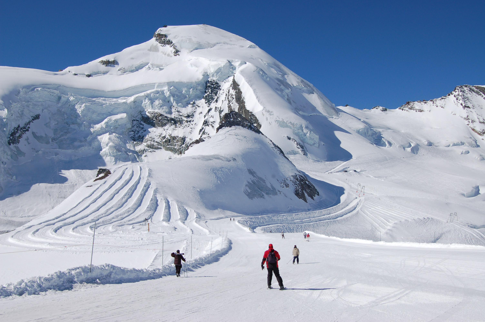
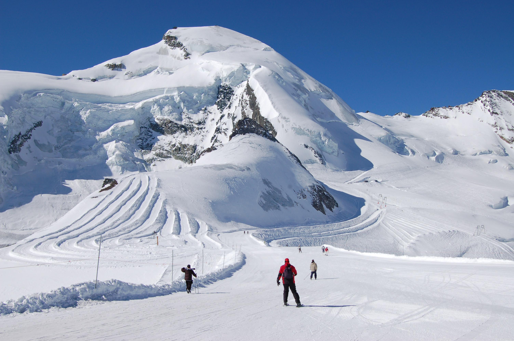

Zürich is the largest city in Switzerland and the capital of the canton of Zürich. It is located in north-central Switzerland, at the northwestern tip of Lake Zürich. Zürich is a hub for railways, roads, and air traffic. Both Zurich Airport and its main railway station are the largest and busiest in the country.
Permanently settled for over 2,000 years, Zürich was founded by the Romans, who, in 15 BC, called it Turicum. However, early settlements have been found dating back more than 6,400 years (although this only indicates human presence in the area and not the presence of a town that early). During the Middle Ages, Zürich gained the independent and privileged status of imperial immediacy and, in 1519, became a primary centre of the Protestant Reformation in Europe under the leadership of Huldrych Zwingli. Zürich is among the world's largest financial centres despite having a relatively small population. The city is home to many financial institutions and banking companies The official language of Zürich is German, but the main spoken language is the local variant of the Alemannic Swiss German dialect, Zürich German.
Many museums and art galleries can be found in the city, including the Swiss National Museum and Kunsthaus. Schauspielhaus Zürich is considered to be one of the most important theatres in the German-speaking world. Home to a very diverse range of different landscapes and climates, Switzerland is renowned around the world for its beautiful mountain scenery and the 4,478m high Matterhorn is undoubtedly its most famous peak. The most populous area is the Swiss Plateau and it is here that you can find rolling hills, open pastures and sprawling forests which contrast starkly with many of the other regions and landscapes in the country.
love and kind regards, the SWITZOURIST team.


 



.jpg)